8.2 - Graphique des effets locaux accumulés (ALE)
Les effets locaux accumulés1 décrivent comment les caractéristiques influencent en moyenne la prédiction d’un modèle d’apprentissage automatique. Les tracés ALE sont une alternative plus rapide et impartiale aux tracés de dépendance partielle (PDP).
Je recommande de lire d’abord le chapitre sur les diagrammes de dépendance partielle, car ils sont plus faciles à comprendre et les deux méthodes partagent le même objectif : les deux décrivent comment une caractéristique affecte la prédiction en moyenne. Dans la section suivante, je veux vous convaincre que les diagrammes de dépendance partielle présentent un sérieux problème lorsque les caractéristiques sont corrélées.
8.2.1 - Motivation et intuition
Si les caractéristiques d’un modèle d’apprentissage automatique sont corrélées, le tracé de dépendance partielle n’est pas fiable. Le calcul d’un diagramme de dépendance partielle pour une caractéristique fortement corrélée à d’autres caractéristiques implique de faire la moyenne des prédictions d’instances de données artificielles qui sont improbables dans la réalité. Cela peut grandement biaiser l’effet de fonctionnalité estimé. Imaginez calculer des tracés de dépendance partielle pour un modèle d’apprentissage automatique qui prédit la valeur d’une maison en fonction du nombre de pièces et de la taille de la surface habitable. Nous nous intéressons à l’effet de la surface habitable sur la valeur prédite. Pour rappel, la recette des tracés de dépendance partielle est la suivante :
- Sélectionnez la fonctionnalité.
- Définir la grille.
- Par valeur de grille :
- Remplacez la fonctionnalité par la valeur de grille et
- les prédictions moyennes.
- Dessinez une courbe. Pour le calcul de la première valeur de grille du PDP – disons 30 m 2 – nous remplaçons la surface habitable pour toutes les instances par 30 m 2 , même pour les maisons de 10 pièces. Cela me semble être une maison très inhabituelle. Le graphique de dépendance partielle inclut ces maisons irréalistes dans l’estimation des effets de caractéristiques et prétend que tout va bien. La figure suivante illustre deux caractéristiques corrélées et comment il se fait que la méthode du diagramme de dépendance partielle fait la moyenne des prédictions d’instances improbables.
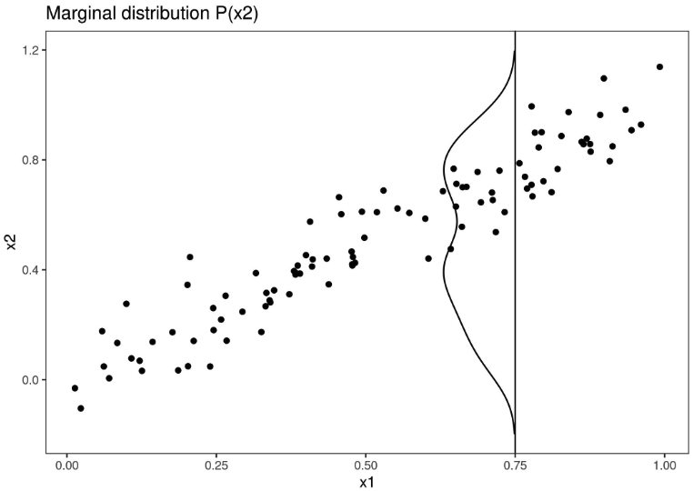
Que pouvons-nous faire pour obtenir une estimation de l’effet des caractéristiques qui respecte la corrélation des caractéristiques ? Nous pourrions faire la moyenne sur la distribution conditionnelle de la fonctionnalité, c’est-à-dire qu’à une valeur de grille de x1, nous faisons la moyenne des prédictions d’instances avec une valeur x1 similaire. La solution pour calculer les effets de caractéristiques à l’aide de la distribution conditionnelle est appelée Marginal Plots, ou M-Plots (nom déroutant, car ils sont basés sur la distribution conditionnelle et non sur la distribution marginale). Attends, je ne t’ai pas promis de parler des complots ALE ? Les M-Plots ne sont pas la solution que nous recherchons. Pourquoi les M-Plots ne résolvent-ils pas notre problème ? Si l’on fait la moyenne des prévisions de toutes les maisons d’environ 30 m 2 , on estime l’ effet combiné de la surface habitable et du nombre de pièces, du fait de leur corrélation. Supposons que la surface habitable n’ait aucun effet sur la valeur prédite d’une maison, seul le nombre de pièces en ait un. Le M-Plot montrerait toujours que la taille de la surface habitable augmente la valeur prédite, puisque le nombre de pièces augmente avec la surface habitable. Le graphique suivant montre pour deux fonctionnalités corrélées le fonctionnement des M-Plots.
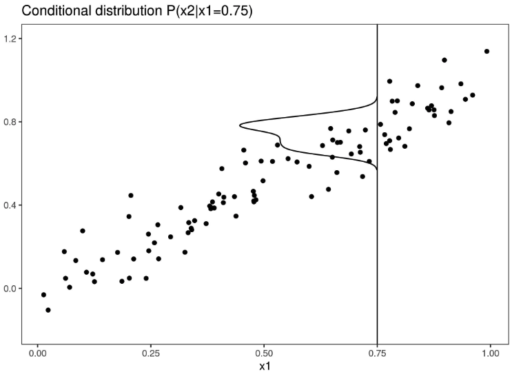
Les M-Plots évitent de faire la moyenne des prédictions d’instances de données improbables, mais ils mélangent l’effet d’une fonctionnalité avec les effets de toutes les fonctionnalités corrélées. Les tracés ALE résolvent ce problème en calculant – également sur la base de la distribution conditionnelle des caractéristiques – les différences de prédictions au lieu des moyennes . Pour l’effet de la surface habitable de 30 m 2 , la méthode ALE utilise toutes les maisons d’environ 30 m 2 et obtient les prédictions du modèle prétendant que ces maisons faisaient 31 m 2 moins la prédiction prétendant qu’elles faisaient 29 m 2 . Cela nous donne l’effet pur de l’espace de vie et ne mélange pas l’effet avec les effets des éléments corrélés. L’utilisation de différences bloque l’effet d’autres fonctionnalités. Le graphique suivant donne une idée de la façon dont les tracés ALE sont calculés.
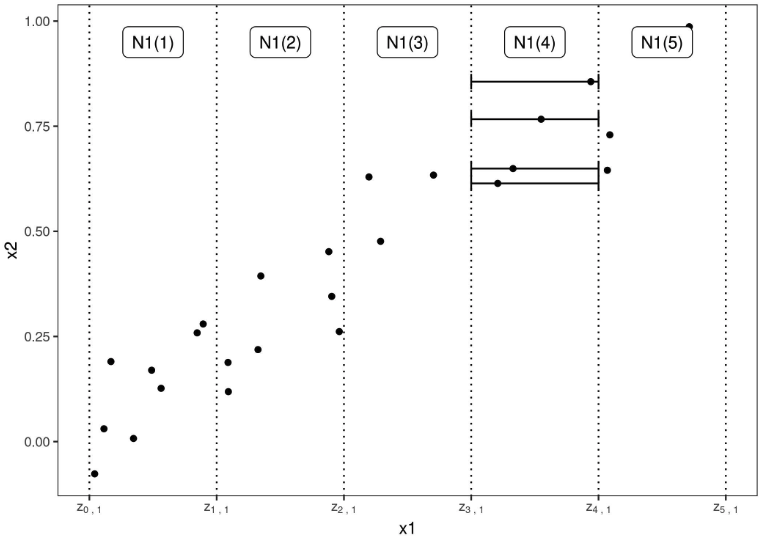
Pour résumer comment chaque type de tracé (PDP, M, ALE) calcule l’effet d’une caractéristique à une certaine valeur de grille v :
Tracés de dépendance partielle : « Laissez-moi vous montrer ce que le modèle prédit en moyenne lorsque chaque instance de données a la valeur v pour cette fonctionnalité. J’ignore si la valeur v a un sens pour toutes les instances de données.
M-Plots : « Laissez-moi vous montrer ce que le modèle prédit en moyenne pour les instances de données qui ont des valeurs proches de v pour cette fonctionnalité. L’effet pourrait être dû à cette fonctionnalité, mais également à des fonctionnalités corrélées.
Tracés ALE : “Permettez-moi de vous montrer comment les prédictions du modèle changent dans une petite” fenêtre “de la fonctionnalité autour de v pour les instances de données dans cette fenêtre.”
8.2.2 - Théorie
En quoi les tracés PD, M et ALE diffèrent-ils mathématiquement ? Le point commun aux trois méthodes est qu’elles réduisent la fonction de prédiction complexe f à une fonction qui ne dépend que d’une (ou deux) caractéristiques. Les trois méthodes réduisent la fonction en faisant la moyenne des effets des autres caractéristiques, mais elles diffèrent selon que les moyennes des prédictions ou les différences de prédictions sont calculées et si la moyenne est effectuée sur la distribution marginale ou conditionnelle.
Les diagrammes de dépendance partielle font la moyenne des prédictions sur la distribution marginale.
\[\begin{align*} \hat{f}_{S,PDP}(x) &=& E_{X_C}\left[\hat{f}(x_S,X_C)\right] \\ &=& \int_{X_C}\hat{f}(x_S,X_C)d\mathbb{P}(X_C) \end{align*}\]
Il s’agit de la valeur de la fonction de prédiction f, à la ou aux valeurs de caractéristiques. \(x_S\), en moyenne sur toutes les fonctionnalités de \(X_C\) (ici traitées comme des variables aléatoires). Faire la moyenne signifie calculer l’espérance marginale E sur les caractéristiques de l’ensemble C, qui est l’intégrale des prédictions pondérées par la distribution de probabilité. Cela semble sophistiqué, mais pour calculer la valeur attendue sur la distribution marginale, nous prenons simplement toutes nos instances de données, les forçons à avoir une certaine valeur de grille pour les caractéristiques de l’ensemble S et faisons la moyenne des prédictions pour cet ensemble de données manipulé. Cette procédure garantit que nous faisons la moyenne sur la distribution marginale des caractéristiques.
Les M-plots font la moyenne des prédictions sur la distribution conditionnelle.
\[\begin{align*} \hat{f}_{S,M}(x_S) &=& E_{X_C|X_S}\left[\hat{f}(X_S,X_C)|X_S=x_s\right] \\ &=&\int_{X_C}\hat{f}(x_S, X_C)d\mathbb{P}(X_C|X_S = x_S)\end{align*}\]
La seule chose qui change par rapport aux PDP est que nous faisons la moyenne des prédictions conditionnelles à chaque valeur de grille de l’entité d’intérêt, au lieu de supposer la distribution marginale à chaque valeur de grille. En pratique, cela signifie qu’il faut définir un quartier, par exemple pour le calcul de l’effet de 30 m 2 sur la valeur prédite de la maison, on pourrait faire la moyenne des prédictions de toutes les maisons entre 28 et 32 m 2 .
Les tracés ALE font la moyenne des changements dans les prédictions et les accumulent sur la grille (nous reviendrons sur le calcul plus tard).
\[\begin{align*} \hat{f}_{S,ALE}(x_S) &=& \int_{z_{0,S}}^{x_S}E_{X_C|X_S = x_S}\left[\hat{f}^S(X_s,X_c)|X_S=z_S\right]dz_S-\text{constant}\\ &=& \int_{z_{0,S}}^{x_S}(\int_{x_C}\hat{f}^S(z_s,X_c)d\mathbb{P}(X_C|X_S = z_S)d{})dz_S-\text{constant} \end{align*}\]
La formule révèle trois différences par rapport aux M-Plots. Premièrement, nous faisons la moyenne des changements de prédictions, et non des prédictions elles-mêmes. Le changement est défini comme la dérivée partielle (mais plus tard, pour le calcul proprement dit, remplacée par les différences dans les prédictions sur un intervalle).
\[\hat{f}^S(x_s,x_c)=\frac{\partial\hat{f}(x_S,x_C)}{\partial{}x_S}\]
La deuxième différence est l’intégrale supplémentaire sur z. Nous accumulons les dérivées partielles locales sur la plage de caractéristiques de l’ensemble S, ce qui nous donne l’effet de la caractéristique sur la prédiction. Pour le calcul proprement dit, les z sont remplacés par une grille d’intervalles sur laquelle nous calculons les changements dans la prédiction. Au lieu de faire directement la moyenne des prédictions, la méthode ALE calcule les différences de prédiction conditionnelles aux caractéristiques S et intègre la dérivée sur les caractéristiques S pour estimer l’effet. Eh bien, cela semble stupide. La dérivation et l’intégration s’annulent généralement, comme si l’on soustrayait d’abord, puis ajoutait le même nombre. Pourquoi est-ce que cela a du sens ici ? La dérivée (ou différence d’intervalle) isole l’effet de la caractéristique d’intérêt et bloque l’effet des caractéristiques corrélées.
La troisième différence entre les tracés ALE et les tracés M est que nous soustrayons une constante des résultats. Cette étape centre le tracé ALE de sorte que l’effet moyen sur les données soit nul.
Un problème demeure : tous les modèles ne sont pas accompagnés d’un dégradé, par exemple les forêts aléatoires n’ont pas de dégradé. Mais comme vous le verrez, le calcul réel fonctionne sans gradients et utilise des intervalles. Approfondissons un peu l’estimation des tracés ALE.
8.2.3 - Estimation
Je décrirai d’abord comment les tracés ALE sont estimés pour une seule caractéristique numérique, puis pour deux caractéristiques numériques et pour une seule caractéristique catégorielle. Pour estimer les effets locaux, nous divisons la caractéristique en plusieurs intervalles et calculons les différences dans les prédictions. Cette procédure se rapproche des dérivées et fonctionne également pour les modèles sans dérivées.
Nous estimons d’abord l’effet non centré :
\[\hat{\tilde{f}}_{j,ALE}(x)=\sum_{k=1}^{k_j(x)}\frac{1}{n_j(k)}\sum_{i:x_{j}^{(i)}\in{}N_j(k)}\left[\hat{f}(z_{k,j},x^{(i)}_{-j})-\hat{f}(z_{k-1,j},x^{(i)}_{-j})\right]\]
Décomposons cette formule en commençant par le côté droit. Le nom Accumulated Local Effects reflète joliment tous les composants individuels de cette formule. À la base, la méthode ALE calcule les différences dans les prédictions, grâce à quoi nous remplaçons la caractéristique d’intérêt par les valeurs de grille z. La différence de prédiction correspond à l’effet que la fonctionnalité a sur une instance individuelle dans un certain intervalle. La somme de droite additionne les effets de toutes les instances dans un intervalle qui apparaît dans la formule comme voisinage. \(N_j(k)\). Nous divisons cette somme par le nombre d’instances dans cet intervalle pour obtenir la différence moyenne des prédictions pour cet intervalle. Cette moyenne dans l’intervalle est couverte par le terme Local dans le nom ALE. Le symbole de somme de gauche signifie que nous accumulons les effets moyens sur tous les intervalles. L’ALE (non centrée) d’une valeur de caractéristique qui se situe, par exemple, dans le troisième intervalle est la somme des effets des premier, deuxième et troisième intervalles. Le mot Accumulé dans ALE reflète cela.
Cet effet est centré pour que l’effet moyen soit nul.
\[\hat{f}_{j,ALE}(x)=\hat{\tilde{f}}_{j,ALE}(x)-\frac{1}{n}\sum_{i=1}^{n}\hat{\tilde{f}}_{j,ALE}(x^{(i)}_{j})\]
La valeur de l’ALE peut être interprétée comme l’effet principal de la fonctionnalité à une certaine valeur par rapport à la prédiction moyenne des données. Par exemple, une estimation ALE de -2 à \(x_j=3\) signifie que lorsque la j-ième caractéristique a la valeur 3, alors la prédiction est inférieure de 2 par rapport à la prédiction moyenne.
Les quantiles de la distribution de l’entité sont utilisés comme grille qui définit les intervalles. L’utilisation des quantiles garantit qu’il y a le même nombre d’instances de données dans chacun des intervalles. Les quantiles présentent l’inconvénient que les intervalles peuvent avoir des longueurs très différentes. Cela peut conduire à des tracés ALE étranges si la caractéristique d’intérêt est très asymétrique, par exemple de nombreuses valeurs faibles et seulement quelques valeurs très élevées.
Graphiques ALE pour l’interaction de deux fonctionnalités
Les tracés ALE peuvent également montrer l’effet d’interaction de deux entités. Les principes de calcul sont les mêmes que pour une entité simple, mais nous travaillons avec des cellules rectangulaires au lieu d’intervalles, car nous devons cumuler les effets en deux dimensions. En plus d’ajuster l’effet moyen global, nous ajustons également les effets principaux des deux caractéristiques. Cela signifie que l’ALE pour deux fonctionnalités estime l’effet de second ordre, qui n’inclut pas les principaux effets des fonctionnalités. En d’autres termes, l’ALE pour deux fonctionnalités montre uniquement l’effet d’interaction supplémentaire des deux fonctionnalités. Je vous épargne les formules des tracés ALE 2D car elles sont longues et désagréables à lire. Si le calcul vous intéresse, je vous renvoie au papier, formules (13) – (16). Je m’appuierai sur des visualisations pour développer l’intuition sur le calcul ALE du second ordre.
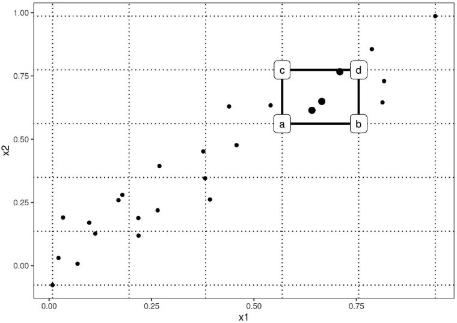
Dans la figure précédente, de nombreuses cellules sont vides en raison de la corrélation. Dans le tracé ALE, cela peut être visualisé avec une case grisée ou sombre. Vous pouvez également remplacer l’estimation ALE manquante d’une cellule vide par l’estimation ALE de la cellule non vide la plus proche.
Étant donné que les estimations ALE pour deux caractéristiques ne montrent que l’effet de second ordre des caractéristiques, l’interprétation nécessite une attention particulière. L’effet de second ordre est l’effet d’interaction supplémentaire des fonctionnalités après avoir pris en compte les principaux effets des fonctionnalités. Supposons que deux caractéristiques n’interagissent pas, mais que chacune ait un effet linéaire sur le résultat prédit. Dans le tracé ALE 1D pour chaque entité, nous verrions une ligne droite comme courbe ALE estimée. Mais lorsque nous traçons les estimations ALE 2D, elles devraient être proches de zéro, car l’effet de second ordre n’est que l’effet supplémentaire de l’interaction. Les tracés ALE et PD diffèrent à cet égard : les PDP montrent toujours l’effet total, les tracés ALE montrent l’effet de premier ou de second ordre. Ce sont des décisions de conception qui ne dépendent pas des mathématiques sous-jacentes. Vous pouvez soustraire les effets d’ordre inférieur dans un diagramme de dépendance partielle pour obtenir les effets principaux ou secondaires purs ou, vous pouvez obtenir une estimation du total des diagrammes ALE en vous abstenant de soustraire les effets d’ordre inférieur.
Les effets locaux accumulés pourraient également être calculés pour des ordres arbitrairement supérieurs (interactions de trois caractéristiques ou plus), mais comme indiqué dans le chapitre PDP, seulement deux caractéristiques au maximum ont du sens, car les interactions supérieures ne peuvent pas être visualisées ni même interprétées de manière significative.
ALE pour les fonctionnalités catégorielles
La méthode des effets locaux accumulés nécessite – par définition – que les valeurs des caractéristiques aient un ordre, car la méthode accumule les effets dans une certaine direction. Les caractéristiques catégorielles n’ont aucun ordre naturel. Pour calculer un tracé ALE pour une caractéristique catégorielle, nous devons d’une manière ou d’une autre créer ou trouver un ordre. L’ordre des catégories influence le calcul et l’interprétation des effets locaux accumulés.
Une solution consiste à classer les catégories en fonction de leur similarité en fonction des autres caractéristiques. La distance entre deux catégories est la somme des distances de chaque entité. La distance par caractéristique compare soit la distribution cumulative dans les deux catégories, également appelée distance de Kolmogorov-Smirnov (pour les caractéristiques numériques), soit les tableaux de fréquences relatives (pour les caractéristiques catégorielles). Une fois que nous avons les distances entre toutes les catégories, nous utilisons une mise à l’échelle multidimensionnelle pour réduire la matrice de distance à une mesure de distance unidimensionnelle. Cela nous donne un ordre des catégories basé sur la similarité.
Pour rendre cela un peu plus clair, voici un exemple : supposons que nous ayons les deux caractéristiques catégorielles « saison » et « météo » et une caractéristique numérique « température ». Pour la première caractéristique catégorielle (saison), nous souhaitons calculer les ALE. La fonctionnalité comporte les catégories « printemps », « été », « automne » et « hiver ». Nous commençons par calculer la distance entre les catégories « printemps » et « été ». La distance est la somme des distances sur les caractéristiques température et météo. Pour la température, nous prenons toutes les instances avec la saison « printemps », calculons la fonction de distribution cumulée empirique et faisons de même pour les instances avec la saison « été » et mesurons leur distance avec la statistique de Kolmogorov-Smirnov. Pour la fonction météo, nous calculons pour toutes les instances « printemps » les probabilités pour chaque type de temps, faisons de même pour les instances « été » et résumons les distances absolues dans la distribution de probabilité. Si le « printemps » et « l’été » ont des températures et des conditions météorologiques très différentes, la distance totale par catégorie est grande. Nous répétons la procédure avec les autres paires saisonnières et réduisons la matrice de distance résultante à une seule dimension par mise à l’échelle multidimensionnelle.
8.2.4 - Exemples
Voyons les complots ALE en action. J’ai construit un scénario dans lequel les tracés de dépendance partielle échouent. Le scénario se compose d’un modèle de prédiction et de deux fonctionnalités fortement corrélées. Le modèle de prédiction est principalement un modèle de régression linéaire, mais il fait quelque chose de bizarre en combinant les deux caractéristiques pour lesquelles nous n’avons jamais observé d’instances.
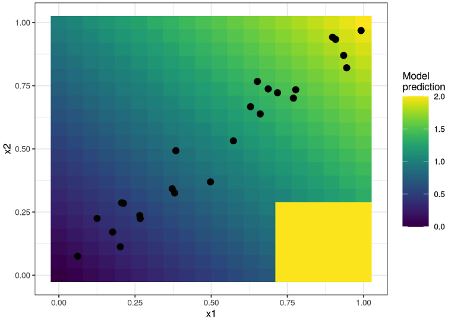
Est-ce un scénario réaliste et pertinent ? Lorsque vous entraînez un modèle, l’algorithme d’apprentissage minimise la perte des instances de données d’entraînement existantes. Des choses étranges peuvent se produire en dehors de la distribution des données d’entraînement, car le modèle n’est pas pénalisé pour avoir fait des choses étranges dans ces domaines. Quitter la distribution des données est appelé extrapolation, qui peut également être utilisée pour tromper les modèles d’apprentissage automatique, décrits dans le chapitre sur les exemples contradictoires. Voyez dans notre petit exemple comment les tracés de dépendance partielle se comportent par rapport aux tracés ALE.
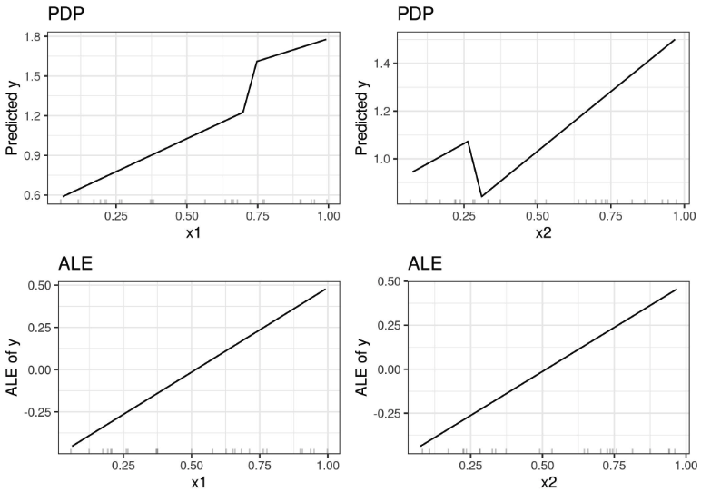
Mais n’est-il pas intéressant de voir que notre modèle se comporte bizarrement à x1 > 0,7 et x2 < 0,3 ? Eh bien, oui et non. Puisqu’il s’agit d’instances de données qui pourraient être physiquement impossibles ou du moins extrêmement improbables, il n’est généralement pas pertinent de les examiner. Mais si vous pensez que la distribution de vos tests peut être légèrement différente et que certaines instances se situent réellement dans cette plage, il serait alors intéressant d’inclure cette zone dans le calcul des effets des fonctionnalités. Mais cela doit être une décision consciente d’inclure des zones pour lesquelles nous n’avons pas encore observé de données et cela ne devrait pas être un effet secondaire de la méthode choisie comme le PDP. Si vous pensez que le modèle sera utilisé ultérieurement avec des données distribuées différemment, je vous recommande d’utiliser des tracés ALE et de simuler la distribution des données que vous attendez.
En nous tournant vers un ensemble de données réelles, prévoyons le nombre de vélos loués en fonction de la météo et du jour et vérifions si les tracés ALE fonctionnent vraiment aussi bien que promis. Nous formons un arbre de régression pour prédire le nombre de vélos loués un jour donné et utilisons des tracés ALE pour analyser comment la température, l’humidité relative et la vitesse du vent influencent les prévisions. Regardons ce que disent les tracés ALE :
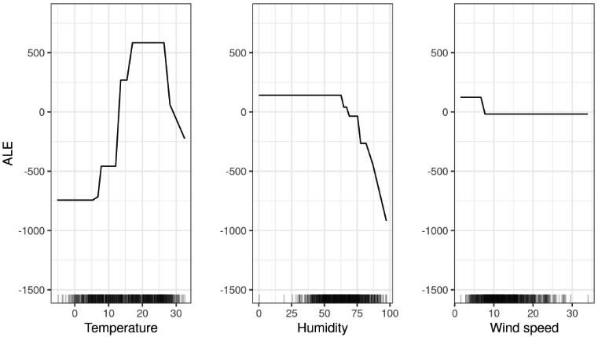
Examinons la corrélation entre la température, l’humidité et la vitesse du vent ainsi que toutes les autres caractéristiques. Étant donné que les données contiennent également des caractéristiques catégorielles, nous ne pouvons pas utiliser uniquement le coefficient de corrélation de Pearson, qui ne fonctionne que si les deux caractéristiques sont numériques. Au lieu de cela, j’entraîne un modèle linéaire pour prédire, par exemple, la température en fonction de l’une des autres caractéristiques en entrée. Ensuite, je mesure la variance expliquée par l’autre caractéristique du modèle linéaire et je prends la racine carrée. Si l’autre caractéristique était numérique, alors le résultat est égal à la valeur absolue du coefficient de corrélation standard de Pearson. Mais cette approche basée sur un modèle de « variance expliquée » (également appelée ANOVA, qui signifie ANalysis Of VAriance) fonctionne même si l’autre caractéristique est catégorique. La mesure « variance expliquée » se situe toujours entre 0 (pas d’association) et 1 (la température peut être parfaitement prédite à partir de l’autre caractéristique). Nous calculons la variance expliquée de la température, de l’humidité et de la vitesse du vent avec toutes les autres caractéristiques. Plus la variance expliquée (corrélation) est élevée, plus il y a de problèmes (potentiels) avec les tracés PD. La figure suivante montre dans quelle mesure les caractéristiques météorologiques sont corrélées avec d’autres caractéristiques.
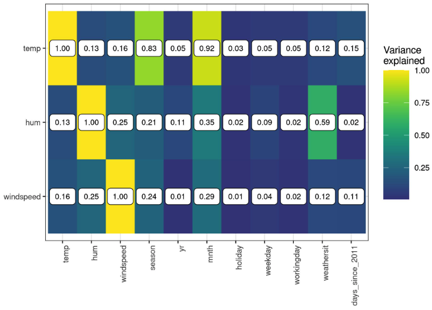
Cette analyse de corrélation révèle que nous pouvons rencontrer des problèmes avec les diagrammes de dépendance partielle, notamment pour la caractéristique de température. Eh bien, voyez par vous-même :
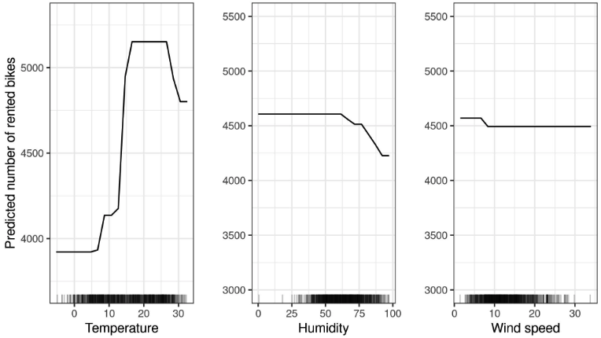
Voyons ensuite les tracés ALE en action pour une fonctionnalité catégorielle. Le mois est une caractéristique catégorielle dont nous souhaitons analyser l’effet sur le nombre de vélos prévu. On peut soutenir que les mois ont déjà un certain ordre (janvier à décembre), mais essayons de voir ce qui se passe si nous réordonnons d’abord les catégories par similarité, puis calculons les effets. Les mois sont classés selon la similitude des jours de chaque mois en fonction d’autres caractéristiques, telles que la température ou s’il s’agit d’un jour férié.
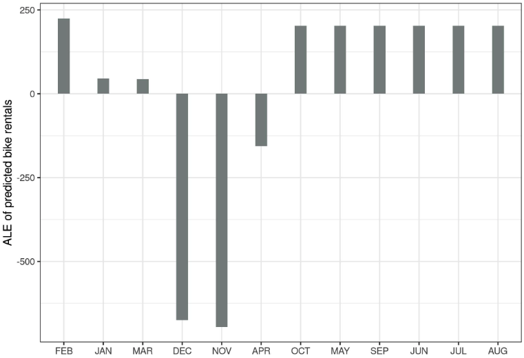
Étant donné que de nombreuses caractéristiques sont liées à la météo, l’ordre des mois reflète fortement la similitude des conditions météorologiques entre les mois. Tous les mois les plus froids se trouvent sur le côté gauche (de février à avril) et les mois les plus chauds sur le côté droit (d’octobre à août). Gardez à l’esprit que des caractéristiques non météorologiques ont également été incluses dans le calcul de similarité, par exemple la fréquence relative des vacances a le même poids que la température pour calculer la similarité entre les mois.
Nous considérons ensuite l’effet de second ordre de l’humidité et de la température sur le nombre prévu de vélos. N’oubliez pas que l’effet de second ordre est l’effet d’interaction supplémentaire des deux fonctionnalités et n’inclut pas les effets principaux. Cela signifie que, par exemple, vous ne verrez pas l’effet principal selon lequel une humidité élevée entraîne en moyenne un nombre inférieur de vélos prévus dans le tracé ALE de second ordre.
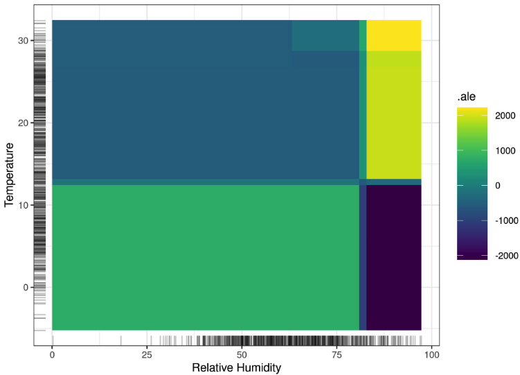
Gardez à l’esprit que les deux principaux effets de l’humidité et de la température indiquent que le nombre prévu de vélos diminue par temps très chaud et humide. Par temps chaud et humide, l’effet combiné de la température et de l’humidité n’est donc pas la somme des effets principaux, mais plus important que la somme. Pour souligner la différence entre l’effet pur du second ordre (le tracé ALE 2D que vous venez de voir) et l’effet total, regardons le tracé de dépendance partielle. Le PDP montre l’effet total, qui combine la prédiction moyenne, les deux effets principaux et l’effet de second ordre (l’interaction).
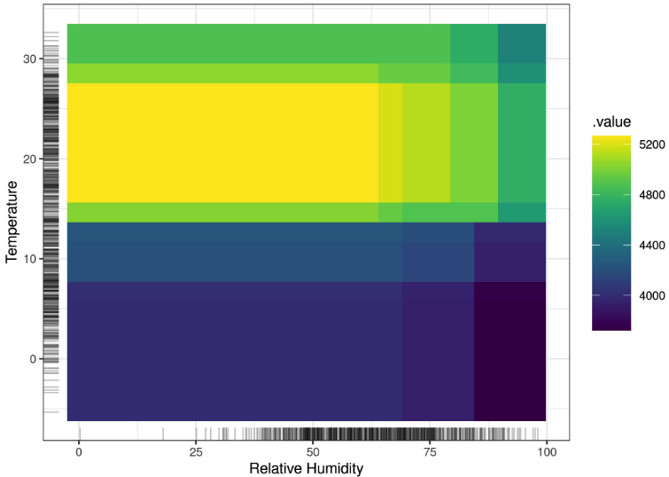
Si vous n’êtes intéressé que par l’interaction, vous devriez examiner les effets de second ordre, car l’effet total mélange les effets principaux dans l’intrigue. Mais si vous voulez connaître l’effet combiné des fonctionnalités, vous devez regarder l’effet total (que montre le PDP). Par exemple, si vous souhaitez connaître le nombre prévu de vélos à 30 degrés Celsius et 80 % d’humidité, vous pouvez le lire directement à partir du PDP 2D. Si vous souhaitez lire la même chose à partir des tracés ALE, vous devez examiner trois tracés : le tracé ALE pour la température, pour l’humidité et pour la température + humidité et vous devez également connaître la prévision moyenne globale. Dans un scénario dans lequel deux éléments n’ont aucune interaction, le tracé des effets totaux des deux éléments pourrait être trompeur car il montre probablement un paysage complexe, suggérant une certaine interaction, mais il s’agit simplement du produit des deux effets principaux. L’effet du second ordre montrerait immédiatement qu’il n’y a pas d’interaction.
Assez de vélos pour l’instant, passons à une tâche de classification. Nous formons une forêt aléatoire pour prédire la probabilité de cancer du col de l’utérus en fonction de facteurs de risque. Nous visualisons les effets locaux accumulés pour deux des fonctionnalités :
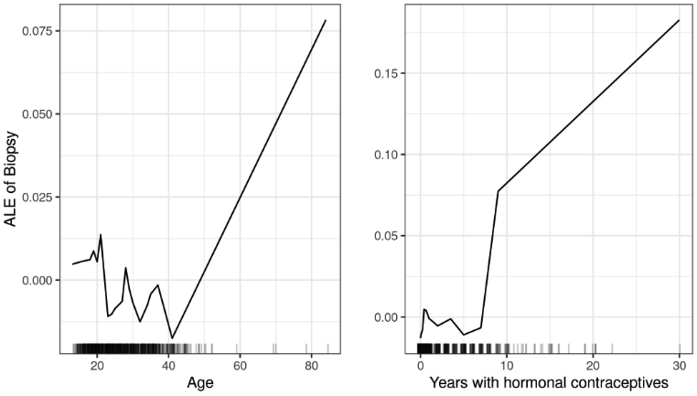
Nous examinons ensuite l’interaction entre le nombre de grossesses et l’âge.
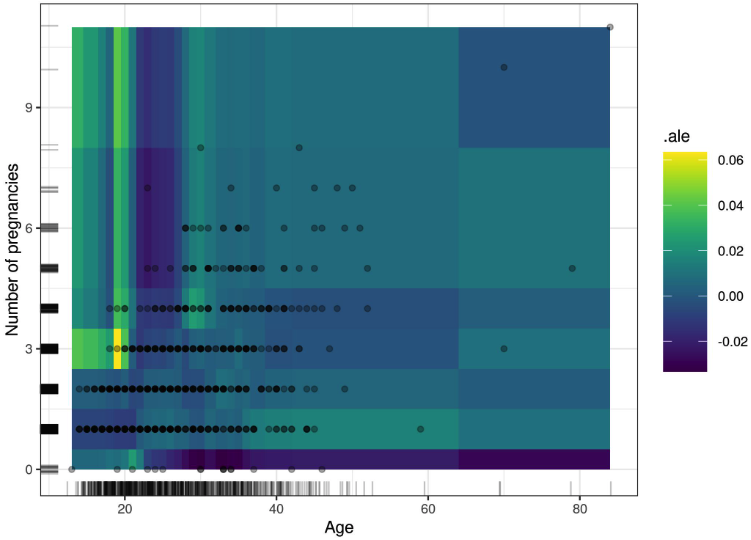
8.2.5 - Avantages
Les tracés ALE sont impartiaux, ce qui signifie qu’ils fonctionnent toujours lorsque les caractéristiques sont corrélées. Les tracés de dépendance partielle échouent dans ce scénario car ils marginalisent des combinaisons improbables, voire physiquement impossibles, de valeurs de caractéristiques.
Les tracés ALE sont plus rapides à calculer que les PDP et évoluent avec O(n), puisque le plus grand nombre possible d’intervalles est le nombre d’instances avec un intervalle par instance. Le PDP nécessite n fois le nombre d’estimations de points de grille. Pour 20 points de grille, les PDP nécessitent 20 fois plus de prédictions que le pire des cas de tracé ALE où autant d’intervalles que d’instances sont utilisés.
L’ interprétation des tracés ALE est claire : conditionnellement à une valeur donnée, l’effet relatif du changement de caractéristique sur la prédiction peut être lu à partir du tracé ALE. Les tracés ALE sont centrés sur zéro. Cela rend leur interprétation intéressante, car la valeur en chaque point de la courbe ALE correspond à la différence par rapport à la prédiction moyenne. Le tracé ALE 2D montre uniquement l’interaction : Si deux entités n’interagissent pas, le tracé ne montre rien.
L’ensemble de la fonction de prédiction peut être décomposée en une somme de fonctions ALE de dimension inférieure, comme expliqué dans le chapitre sur la décomposition fonctionnelle.
Dans l’ensemble, dans la plupart des situations, je préférerais les tracés ALE aux PDP, car les fonctionnalités sont généralement corrélées dans une certaine mesure.
8.2.6 - Inconvénients
Une interprétation de l’effet sur plusieurs intervalles n’est pas autorisée si les caractéristiques sont fortement corrélées. Prenons le cas où vos caractéristiques sont fortement corrélées et où vous regardez l’extrémité gauche d’un tracé 1D-ALE. La courbe ALE pourrait inviter à l’interprétation erronée suivante : « La courbe ALE montre comment la prédiction change, en moyenne, lorsque nous modifions progressivement la valeur de la caractéristique respective pour une instance de données, tout en gardant les instances des autres valeurs de caractéristiques fixes. » Les effets sont calculés par intervalle (localement) et donc l’interprétation de l’effet ne peut être que locale. Pour plus de commodité, les effets par intervalle sont cumulés pour afficher une courbe lisse, mais gardez à l’esprit que chaque intervalle est créé avec différentes instances de données.
Les effets ALE peuvent différer des coefficients spécifiés dans un modèle de régression linéaire lorsque les caractéristiques interagissent et sont corrélées. Grömping (2020)2 a montré que dans un modèle linéaire avec deux caractéristiques corrélées et un terme d’interaction supplémentaire (\(\hat{f}(x) = \beta_0 + \beta_1 x_1 + \beta_2 x_2 + \beta_3 x_1 x_2\)) les tracés ALE de premier ordre ne montrent pas de ligne droite. Au lieu de cela, ils sont légèrement incurvés car ils intègrent des parties de l’interaction multiplicative des caractéristiques. Pour comprendre ce qui se passe ici, je vous recommande de lire le chapitre sur la décomposition des fonctions. En bref, l’ALE définit les effets de premier ordre (ou 1D) différemment de la formule linéaire qui les décrit. Ce n’est pas nécessairement faux, car lorsque les caractéristiques sont corrélées, l’attribution des interactions n’est pas aussi claire. Mais il n’est certainement pas intuitif que l’ALE et le coefficient linéaire ne correspondent pas.
Les tracés ALE peuvent devenir un peu fragiles (beaucoup de petits hauts et bas) avec un nombre élevé d’intervalles. Dans ce cas, la réduction du nombre d’intervalles rend les estimations plus stables, mais atténue et masque également une partie de la véritable complexité du modèle de prédiction. Il n’existe pas de solution parfaite pour définir le nombre d’intervalles . Si le nombre est trop petit, les tracés ALE risquent de ne pas être très précis. Si le nombre est trop élevé, la courbe peut devenir fragile.
Contrairement aux PDP, les tracés ALE ne sont pas accompagnés de courbes ICE. Pour les PDP, les courbes ICE sont excellentes car elles peuvent révéler une hétérogénéité dans l’effet des caractéristiques, ce qui signifie que l’effet d’une caractéristique semble différent pour des sous-ensembles de données. Pour les tracés ALE, vous pouvez uniquement vérifier par intervalle si l’effet est différent entre les instances, mais chaque intervalle a des instances différentes, ce n’est donc pas la même chose que les courbes ICE.
Les estimations ALE de second ordre ont une stabilité variable dans l’espace des fonctionnalités, qui n’est en aucun cas visualisée. La raison en est que chaque estimation d’un effet local dans une cellule utilise un nombre différent d’instances de données. En conséquence, toutes les estimations ont une précision différente (mais elles restent les meilleures estimations possibles). Le problème existe dans une version moins grave pour les tracés ALE à effet principal. Le nombre d’instances est le même dans tous les intervalles, grâce à l’utilisation de quantiles comme grille, mais dans certaines zones, il y aura de nombreux intervalles courts et la courbe ALE sera composée de beaucoup plus d’estimations. Mais pour les intervalles longs, qui peuvent représenter une grande partie de la courbe entière, il y a comparativement moins d’instances. Cela s’est produit par exemple dans le graphique ALE de prédiction du cancer du col de l’utérus pour un âge élevé.
Les tracés des effets de second ordre peuvent être un peu ennuyeux à interpréter, car il faut toujours garder les effets principaux à l’esprit. Il est tentant de lire les cartes thermiques comme l’effet total des deux fonctionnalités, mais il ne s’agit que de l’effet supplémentaire de l’interaction. L’effet de second ordre pur est intéressant pour découvrir et explorer les interactions, mais pour interpréter à quoi ressemble l’effet, je pense qu’il est plus logique d’intégrer les effets principaux dans l’intrigue.
La mise en œuvre des tracés ALE est beaucoup plus complexe et moins intuitive que celle des tracés de dépendance partielle.
Même si les tracés ALE ne sont pas biaisés en cas de caractéristiques corrélées, l’interprétation reste difficile lorsque les caractéristiques sont fortement corrélées. Parce que s’ils ont une très forte corrélation, il est logique d’analyser l’effet de la modification des deux caractéristiques ensemble et non isolément. Cet inconvénient n’est pas spécifique aux tracés ALE, mais constitue un problème général de caractéristiques fortement corrélées.
Si les caractéristiques ne sont pas corrélées et que le temps de calcul ne pose pas de problème, les PDP sont légèrement préférables car ils sont plus faciles à comprendre et peuvent être tracés avec les courbes ICE.
La liste des inconvénients est devenue assez longue, mais ne vous laissez pas tromper par le nombre de mots que j’utilise : En règle générale : utilisez ALE au lieu de PDP.
8.2.7 - Mise en œuvre et alternatives
Ai-je mentionné que les tracés de dépendance partielle et les courbes d’espérances conditionnelles individuelles sont une alternative ? =)
Les tracés ALE sont implémentés dans R dans le package ALEPlot R par l’inventeur lui-même et une fois dans le package iml. ALE dispose également d’au moins deux implémentations Python avec le package ALEPython et dans Alibi.
Notes de bas de page
Apley, Daniel W., and Jingyu Zhu. “Visualizing the effects of predictor variables in black box supervised learning models.” Journal of the Royal Statistical Society: Series B (Statistical Methodology) 82.4 (2020): 1059-1086.↩︎
Grömping, Ulrike. “Model-Agnostic Effects Plots for Interpreting Machine Learning Models.” Reports in Mathematics, Physics and Chemistry: Department II, Beuth University of Applied Sciences Berlin. Report 1/2020 (2020)↩︎